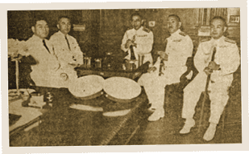

|
j
a v a s c r i p t |
February 4, 1942
The Japanese “looting” of Manila continues; this afternoon it was the Yucuanseh Drug Store. Case after case of Listerine and even castor oil sailed out the door. Resentful eyes followed the trucks everywhere. I recently saw troops fill five trucks with cases of Carnation Milk (a trusted friend counted seven). Add the radios, rice, canned goods and cigarettes, and it’s clear that there can no longer be any goodwill between Filipinos and Japanese. Meanwhile, police have been ordered to target “profiteers” on a “shoot-to-kill” basis. A picture in the Tribune shows a couple of them loading shotguns. Well, I suggest they start with the Mori Bicycle Shop and the Osaka Bazaar. We’re getting tired of reading about falling prices when, in fact, they’ve doubled since the occupation. Matches have gone up 800% and kerosene 600%, if you can find any. On a brighter note, Maurice took down my aerial yesterday but I discovered I could get the BBC on a little portable I bought for Ma three months ago.

Kihara, President Vargas, unnamed Vice Admiral and Admiral, and the real head of the country.
A picture in La Vanguardia that Manila calls “the new orchestra” shows Consul Jitaro Kihara, Vargas, two naval officials and the “Chief of State.” The five sit in a semicircle with the navy men holding their swords like clarinets, and two caps on the table looking like drums. As usual, Kihara looks like he’s about to pop a blood vessel. |